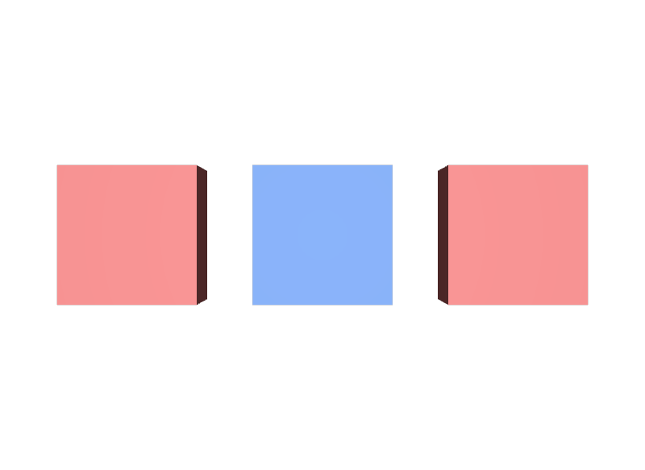

Prim名を書き間違える
上書きが効かないときは、まずPathを確かめます。overは存在しないPathにも黙って書けてしまうため、エラーになりません。
STEP 41 · SPECIFIER
既にあるPrimへ、意見だけを重ねます
今日これだけ
公式情報に基づく説明
overは「上書き」を意味するSpecifierです。そのPathに対して値の意見（Opinion）を持ちますが、Primを定義はしません。どこか別のLayerにdefがあって初めて、その意見が生きたPrimへ反映されます。defがどこにも無ければ、そのPathのPrimはdefinedにならず、描画もされません。
USDA
def Xform "World"
{
def Cube "Kept"
{
double size = 1
color3f[] primvars:displayColor = [(0.85, 0.2, 0.2)]
double3 xformOp:translate = (-1.4, 0, 0)
uniform token[] xformOpOrder = ["xformOp:translate"]
}
def Cube "Retouched" { ... 同じく赤 ... }
def Cube "Ghost" { ... 同じく赤 ... }
}3つともdefで、色はすべて赤です。このファイルには一切手を加えません。
USDA
#usda 1.0
(
defaultPrim = "World"
metersPerUnit = 1
subLayers = [
@specifier-base.usda@
]
upAxis = "Y"
)
over "World"
{
over "Retouched"
{
color3f[] primvars:displayColor = [(0.15, 0.35, 0.85)]
}
over "NotThere"
{
color3f[] primvars:displayColor = [(0.2, 0.7, 0.3)]
}
}subLayersで土台のファイルを重ねています。over "Retouched"は土台にあるdef Cube "Retouched"と同じPathを指すので、色の意見が上書きとして効きます。一方over "NotThere"は、土台のどこにも対応するdefがありません。
結果

Retouchedだけが青へ変わりました。over "NotThere"に緑を書きましたが、対応するdefが無いため4つ目の箱は現れません。examples/lesson-27b/specifier-over.usda / Apple USD Tools 0.25.2 のusdrecord（Hydra Storm・Metal）/ macOS 26.5.2・Apple M4確かめる
ここがoverで最もつまずきやすい部分です。/World/NotThereはStage上に存在します。ただしdefが無いため定義されておらず、既定の走査からも描画からも外れます。
from pxr import Sdf, Usd
stage = Usd.Stage.Open("specifier-over.usda")
for prim in stage.Traverse():
print(prim.GetPath())
# /World
# /World/Kept
# /World/Retouched
# /World/Ghost
# /World/ShotCam … NotThere は出てこない
not_there = stage.GetPrimAtPath("/World/NotThere")
print(bool(not_there)) # True … Primオブジェクトとしては取得できる
print(not_there.GetSpecifier()) # Sdf.SpecifierOver
print(not_there.IsDefined()) # False … しかし定義されていないTraverse()は既定でdefinedなPrimだけを回ります。定義されていないPrimまで含めたいときはTraverseAll()を使うと、/World/NotThereも現れます。
Diagram
Python
from pxr import Gf, Sdf, Usd, UsdGeom
stage = Usd.Stage.CreateNew("overlay.usda")
stage.GetRootLayer().subLayerPaths.append("specifier-base.usda")
over = stage.OverridePrim("/World/Retouched")
UsdGeom.PrimvarsAPI(over).CreatePrimvar(
"displayColor", Sdf.ValueTypeNames.Color3fArray,
UsdGeom.Tokens.constant).Set([Gf.Vec3f(0.15, 0.35, 0.85)])
stage.Save()
# 書き込んだLayer側のPrim Specは over
print(stage.GetRootLayer().GetPrimAtPath("/World/Retouched").specifier)
# Sdf.SpecifierOver
# Composition後のPrimは def（土台のdefが効いているため）
print(over.GetSpecifier()) # Sdf.SpecifierDef
print(over.IsDefined()) # TrueOverridePrimは、書き込み先のLayerにoverのPrim Specを作ります。subLayerPathsはLayerが重ねるファイルの一覧で、リストとして扱えます。
USDA → Python mapping
USDA
over "Retouched"↓Python
stage.OverridePrim("/World/Retouched")USDA
subLayers = [ @specifier-base.usda@ ]↓Python
stage.GetRootLayer().subLayerPaths.append("specifier-base.usda")USDA
（定義されているかの確認）↓Python
prim.IsDefined()Beginner notes
よくある間違い
上書きが効かないときは、まずPathを確かめます。overは存在しないPathにも黙って書けてしまうため、エラーになりません。
overはPrimを定義しません。新しくPrimを作りたいときはdefを使います。
subLayersに並べたLayerより、それを書いているLayer自身のほうが強くなります。だから上書きが効きます。順序についてはSTEP 44 Sublayersで詳しく扱います。
GetPrimAtPathはPrimオブジェクトを返しますが、それが定義済みとは限りません。存在の判定にはIsDefined()を使います。
UsdPrim.GetSpecifier()はComposition後の結果を返します。土台にdefがあればSdf.SpecifierDefが返り、自分がoverを書いたことは分かりません。Layer側のGetPrimAtPath(path).specifierを見ます。
Glossary
overのPrim Specを作るPython API。Official references
確認日: